D'après le programme officiel tunisien (Thème 1, Partie III), ce chapitre vise à :
1 Expliquer l'origine des toxi-infections alimentaires
2 Expliquer le mode d'infestation par des parasites
3 Faire la relation entre contamination chimique et troubles de la santé
4 Établir des règles d'hygiène pour protéger les aliments
📚 Situation Problème (p.93-94)
Les aliments que nous consommons — qu'ils soient frais, conservés ou fabriqués — peuvent être contaminés par des substances chimiques toxiques (pesticides, hormones, antibiotiques) ou par des microorganismes pathogènes (bactéries, parasites). Leur consommation peut causer des maladies graves pour la santé.
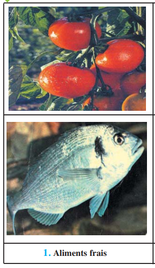
📷 Doc.1 — 1. Aliments frais (p.93)
'">
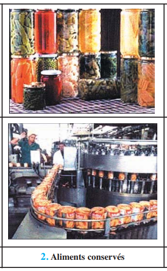
📷 Doc.2 — 2. Aliments conservés (p.93)
'">
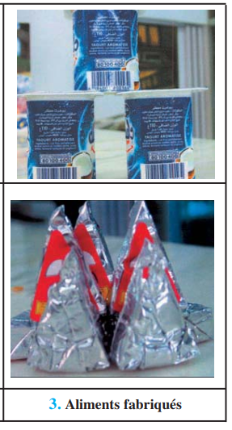
📷 Doc.3 — 3. Aliments fabriqués (p.93)
'">
📚 Préacquis (p.95)
L'organisme est protégé contre les maladies infectieuses grâce à deux types d'immunité : naturelle (barrières physiques, réaction inflammatoire) et acquise (spécifique, avec mémoire). Certaines maladies sont d'origine bactérienne (tétanos), virale (poliomyélite, rougeole, SIDA) ou parasitaire (amibiase). Tous les microorganismes ne sont pas pathogènes — certains sont même utiles (levure de bière, lactobacilles).
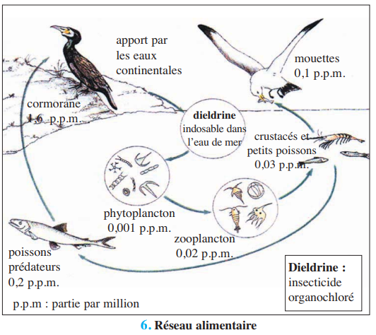
📷 Doc.6 — 6. Réseau alimentaire (schéma montrant l'accumulation des pesticides le long des chaînes alimentaires) (p.95)
'">
✏️ Mini-quiz — Préacquis
1. L'immunité acquise se caractérise par sa .
2. Les pesticides s'accumulent le long des chaînes alimentaires : leurs concentrations .
💡 À retenir : La contamination des aliments peut être biologique (bactéries, virus, parasites) ou chimique (pesticides, métaux lourds, hormones, antibiotiques). La bioamplification est le phénomène par lequel les polluants se concentrent de plus en plus le long des chaînes alimentaires, atteignant des doses toxiques chez les prédateurs terminaux, dont l'Homme.
❓ 4 Questions directrices (p.94)
Quelles sont les différentes sources de contamination des aliments ?
Quelles sont les conséquences de la consommation d'aliments contaminés sur la santé ?
Quels sont les modes d'infestation par les parasites ?
Quelles sont les mesures d'hygiène requises pour protéger notre santé ?
🧠 Comprendre avant de mémoriser
Les aliments peuvent être contaminés par des agents biologiques (bactéries responsables de toxi-infections : salmonellose, botulisme, listériose ; parasites : amibes, oxyures, ténia) ou par des agents chimiques (pesticides, métaux lourds, dioxines, nitrates, hormones, antibiotiques). La contamination peut survenir à toutes les étapes : production (pesticides, élevage aux antibiotiques), conservation (conserves, réfrigération) ou préparation (manque d'hygiène). La prévention repose sur des règles d'hygiène strictes et une réglementation des produits utilisés en agriculture et en élevage.
Clique sur chaque notion · Pièges CAPES et connexions révélés
🦠
Toxi-infections
Salmonellose · Botulisme · Listériose
🪱
Parasitoses
Amibiase · Oxyurose · Échinococcose
☣️
Polluants chimiques
Métaux · Dioxines · Nitrates
🧪
Pesticides
Insecticides · Herbicides · Fongicides
💊
Élevage
Antibiotiques · Hormones
🦠 Toxi-infections alimentaires
Maladies causées par l'ingestion d'aliments contaminés par des bactéries pathogènes ou leurs toxines. Les plus fréquentes : salmonellose (œufs, volailles), botulisme (conserves), listériose (lait, fromage). Symptômes : diarrhées, vomissements, fièvre, troubles nerveux.
🪱 Parasitoses
Infections causées par des parasites (protozoaires ou vers) présents dans les aliments contaminés. Amibiase (eau souillée, kystes), oxyurose (mains sales, légumes), échinococcose (viande contaminée par larves de ténia). Les parasites ont des cycles de développement complexes avec des hôtes intermédiaires.
☣️ Polluants chimiques
Mercure (maladie de Minamata — atteintes neurologiques), dioxines/furanes (cancers, malformations congénitales), nitrates (transformation en nitrites cancérigènes). Ces polluants s'accumulent dans les tissus vivants et se concentrent le long des chaînes alimentaires.
🧪 Pesticides
Substances chimiques utilisées en agriculture : insecticides (insectes), fongicides (champignons), herbicides (mauvaises herbes), rodenticides (rongeurs). Les organochlorés (DDT) sont interdits car persistants. Les organophosphorés sont plus dégradables mais restent toxiques.
💊 Élevage industriel
Antibiotiques : utilisés pour prévenir les maladies et accélérer la croissance. Risque = sélection de bactéries résistantes transmissibles à l'Homme. Hormones : utilisées pour accélérer la croissance du bétail. Risques = perturbations endocriniennes, cancers. Interdites dans l'UE, autorisées aux USA.
⚠️ 3 Pièges du CAPES
⚠️ Ne pas confondre toxi-infection et parasitose ▼
Les toxi-infections sont causées par des bactéries ou leurs toxines (salmonellose, botulisme). Les parasitoses sont causées par des protozoaires (amibes) ou des vers (oxyures, ténia). Les symptômes, les traitements et les modes de prévention diffèrent considérablement.
⚠️ Distinguer contamination chimique et contamination biologique ▼
La contamination chimique (pesticides, hormones, métaux lourds) laisse des résidus toxiques non vivants. La contamination biologique implique des agents infectieux vivants (bactéries, parasites) capables de se multiplier dans l'organisme. Les stratégies de prévention sont différentes : lavage/cuisson pour le biologique, réglementation des doses pour le chimique.
⚠️ Antibiotiques en élevage : le danger n'est pas la toxicité directe ▼
Le risque principal des antibiotiques en élevage n'est PAS la toxicité des résidus dans la viande, mais la sélection de bactéries résistantes. Ces bactéries résistantes peuvent être transmises à l'Homme par l'alimentation et rendre les traitements antibiotiques humains inefficaces. C'est un problème majeur de santé publique mondiale.
🔗 Connexions
← Ch.2 — Besoins nutritionnels
Le choix des aliments (Ch.2) doit intégrer les risques de contamination étudiés ici.
→ Ch.6 — Microorganismes utiles
Tous les microbes ne sont pas pathogènes — le Ch.6 montrera leur utilisation dans l'industrie alimentaire.
💭 Réflexion
1. Pourquoi les prédateurs situés au sommet des chaînes alimentaires (comme l'Homme) sont-ils les plus exposés aux polluants comme le mercure ou les pesticides ?
C'est le phénomène de bioamplification (ou bioaccumulation) : les polluants non dégradables s'accumulent dans les tissus des organismes. À chaque niveau trophique, la concentration augmente car le prédateur consomme plusieurs proies contaminées. L'Homme, au sommet des chaînes alimentaires, concentre ainsi dans son organisme les polluants présents chez tous les organismes qu'il consomme (poissons, viande, légumes).
🦠 Activité 1 — Les toxi-infections alimentaires (p.96)
Salmonellose, Botulisme, Listériose
Les toxi-infections alimentaires sont des maladies causées par l'ingestion d'aliments contaminés par des bactéries pathogènes ou par leurs toxines. Les trois plus fréquentes sont la salmonellose, le botulisme et la listériose. Elles représentent un problème majeur de santé publique, aussi bien dans les pays développés que dans les pays en développement.
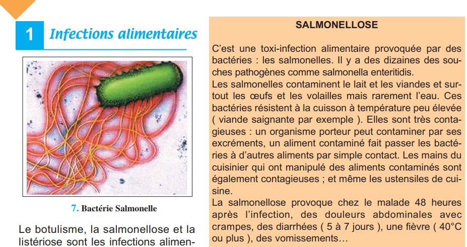
📷 Doc.7 — 7. Bactérie Salmonella — agent de la salmonellose (p.96)
Grave chez femmes enceintes, personnes âgées, immunodéprimés
✏️ Mini-quiz — Activité 1
1. La salmonellose est causée par une .
2. Le botulisme est particulièrement dangereux car .
3. La listériose est grave chez .
💡 À retenir : Les toxi-infections alimentaires partagent des caractéristiques communes : contamination par ingestion, symptômes digestifs et généraux, et prévention par des règles d'hygiène strictes (lavage des mains, cuisson suffisante, respect de la chaîne du froid, contrôle des conserves). La distinction entre infection (bactérie vivante) et intoxication (toxine préformée) est fondamentale pour le traitement.
🪱 Activité 2 — Les parasitoses alimentaires (p.97-98)
Amibiase, Oxyurose, Échinococcose alvéolaire
Les parasitoses sont des maladies causées par des parasites (organismes qui vivent aux dépens d'un hôte). Certains parasites sont transmis par l'alimentation : protozoaires (amibes) ou vers (oxyures, ténia échinocoque). Leur cycle de développement est souvent complexe, impliquant un ou plusieurs hôtes.
📷 Doc.9 — 9. Schéma montrant le cycle de l'amibe et le mode d'infestation de l'homme (p.97)
'">
L'amibiase : L'amibe (Entamoeba histolytica) se trouve sous forme libre ou enkystée (forme de résistance). Les kystes sont ingérés avec de l'eau ou des aliments souillés. Dans l'intestin, ils libèrent des amibes actives qui se multiplient et provoquent des diarrhées sanglantes (dysenterie amibienne).
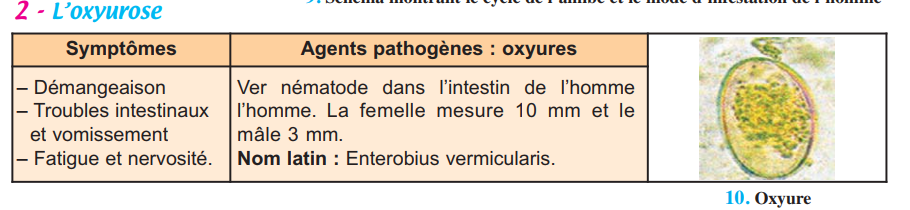
📷 Doc.10 — 10. Oxyure (Enterobius vermicularis) — ver nématode parasite de l'intestin (p.97)
'">
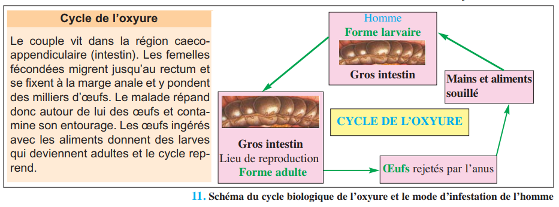
📷 Doc.11 — 11. Schéma du cycle biologique de l'oxyure et le mode d'infestation de l'homme (p.97)'">
L'oxyurose : L'oxyure (Enterobius vermicularis) est un petit ver blanc (femelle ≈ 10 mm). Les œufs sont ingérés par des aliments souillés ou par les mains sales. Les femelles pondent dans la région anale, causant des démangeaisons caractéristiques, surtout la nuit.
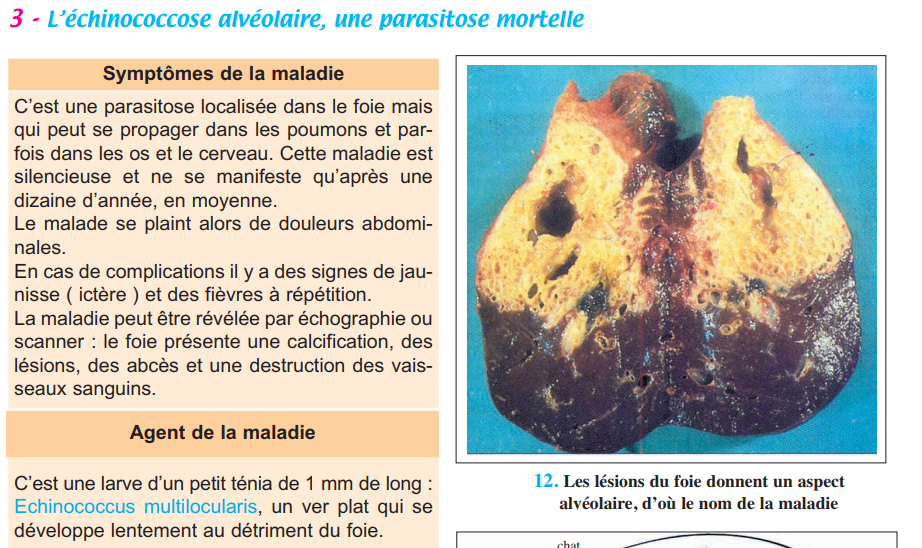
📷 Doc.12 — 12. Les lésions du foie donnent un aspect alvéolaire, d'où le nom de la maladie (p.98)'">
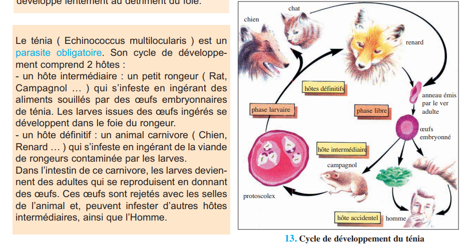
📷 Doc.13 — 13. Cycle de développement du ténia échinocoque (Echinococcus multilocularis) (p.98)'">
L'échinococcose alvéolaire : C'est une parasitose mortelle causée par la larve d'un petit ténia (Echinococcus multilocularis). L'Homme s'infeste en ingérant des aliments souillés par les œufs du parasite (provenant des excréments de chiens ou de renards infectés). La larve se développe lentement dans le foie (parfois poumons, cerveau) en formant des lésions alvéolaires destructrices. Maladie silencieuse pendant 10 ans en moyenne.
🔍 Cycle de l'échinocoque : Hôte définitif = chien/renard (adulte dans l'intestin). Hôte intermédiaire = rongeur (larve dans le foie). L'Homme est un hôte accidentel (impasse parasitaire). Contamination humaine = ingestion d'œufs via aliments souillés par excréments canins.
✏️ Mini-quiz — Activité 2
1. L'amibiase se transmet par .
2. L'oxyurose se caractérise par .
3. L'échinococcose alvéolaire est une parasitose .
💡 À retenir : Les parasitoses alimentaires partagent des modes de contamination communs : ingestion d'aliments ou d'eau souillés par des formes de résistance (kystes, œufs). Leur prévention repose sur : lavage soigneux des fruits et légumes, cuisson suffisante des viandes, hygiène des mains, traitement de l'eau de boisson, vermifugation des animaux domestiques. Le cycle parasitaire complexe explique la difficulté d'éradication de ces maladies.
☣️ Activité 3 — La pollution contamine nos aliments (p.99)
Métaux lourds, Dioxines, Nitrates
Les polluants industriels rejetés dans l'environnement (air, eau, sol) peuvent contaminer les aliments que nous consommons. Certains sont particulièrement dangereux car ils s'accumulent dans les tissus vivants et ne sont pas dégradés par l'organisme. Ils se concentrent le long des chaînes alimentaires (bioamplification).
Polluant
Source
Effets sur la santé
Exemple
Mercure (Hg)
Rejets industriels (usines chimiques)
Troubles neurologiques : picotements, faiblesse musculaire, troubles de la vision, de l'audition, comportements anormaux
Maladie de Minamata (Japon, 1960) : intoxication au méthylmercure via consommation de poissons contaminés
Dioxines et Furanes
Incinération des ordures, industries chimiques
Cancers, malformations congénitales, perturbation du système immunitaire
Trouvés dans le lait maternel, les viandes, les produits laitiers
Nitrates (NO₃⁻)
Engrais agricoles, élevages intensifs
Transformation en nitrites (NO₂⁻) cancérigènes. Méthémoglobinémie (bloque le transport d'O₂ par l'hémoglobine)
Contamination des eaux souterraines et de surface ; aliments (légumes, eau de boisson)
🔍 La bioamplification : Dans la baie de Minamata, les poissons avaient accumulé le mercure sans en mourir. Mais les humains qui les consommaient régulièrement ont développé des troubles neurologiques graves car le mercure se concentrait à chaque niveau de la chaîne alimentaire : eau → plancton → petits poissons → gros poissons → Homme (concentration maximale).
✏️ Mini-quiz — Activité 3
1. La maladie de Minamata est due à l'intoxication par .
2. Les nitrates sont dangereux car ils se transforment en .
3. La bioamplification signifie que les polluants .
💡 À retenir : Les polluants chimiques industriels représentent une menace invisible mais persistante pour la santé. Contrairement aux toxi-infections qui agissent rapidement, leur toxicité est souvent chronique (effets à long terme : cancers, troubles neurologiques). La prévention passe par le contrôle des rejets industriels, le traitement des eaux usées, et la surveillance des teneurs en polluants dans les aliments commercialisés.
🧪 Activité 4 — Alerte contre les pesticides (p.100)
Diversité, Évolution et Risques des pesticides
Les pesticides sont des substances chimiques toxiques fabriquées industriellement et utilisées en agriculture pour éliminer les organismes nuisibles aux cultures. Le terme « pesticide » regroupe une grande diversité de produits classés selon leur cible : insecticides (insectes), fongicides (champignons), herbicides (plantes adventices) et rodenticides (rongeurs).
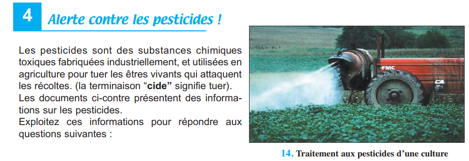
📷 Doc.14 — 14. Traitement aux pesticides d'une culture (p.100)
'">
Les premiers pesticides développés étaient les organochlorés (comme le DDT), des molécules très stables — qualifiées de Polluants Organiques Persistants (POPS). Leur persistance dans l'environnement et leur toxicité ont conduit à leur interdiction en 1972. Ils ont été remplacés par les organophosphorés, plus efficaces et plus rapidement dégradables, mais qui restent toxiques pour l'Homme.
🔍 Répartition ubiquitaire : Les pesticides sont présents partout : dans le sol, l'eau, l'air, les aliments (végétaux et animaux) et dans l'organisme humain (cerveau, sang, lait maternel, foie, sperme, placenta, fœtus). L'OMS estime à 1 million le nombre d'empoisonnements graves par an, avec 220 000 décès. Les effets touchent la peau, les muqueuses, l'appareil digestif, respiratoire, nerveux, reproducteur et immunitaire.
✏️ Mini-quiz — Activité 4
1. Les pesticides organochlorés (DDT) ont été interdits car ils sont .
2. Un herbicide est un pesticide qui cible .
3. Les concentrations de pesticides chez l'Homme sont .
💡 À retenir : Les pesticides illustrent le paradoxe entre bénéfices agricoles (protection des récoltes, augmentation des rendements) et risques sanitaires (toxicité aiguë et chronique). La solution réside dans : l'information des agriculteurs, le respect des doses prescrites, le délai avant récolte, le lavage des fruits et légumes, et le développement de la lutte biologique (utilisation de prédateurs naturels) comme alternative aux pesticides chimiques.
💊 Activité 5 — Antibiotiques et Hormones en élevage (p.101-102)
A — Les antibiotiques en élevage (p.101)
Les antibiotiques sont utilisés dans les élevages intensifs pour deux raisons : prévenir/traiter les maladies infectieuses favorisées par la promiscuité des animaux, et accélérer la croissance des animaux traités (effet promoteur de croissance). Or ces antibiotiques sont souvent les mêmes que ceux utilisés en médecine humaine.
🔍 Le vrai danger : la résistance bactérienne. L'utilisation répétée d'antibiotiques en élevage ne laisse pas que des résidus dans la viande — elle sélectionne des bactéries résistantes à ces antibiotiques. Ces bactéries résistantes peuvent être transmises à l'Homme par la consommation de viande insuffisamment cuite. Résultat : des infections humaines (ex : salmonellose) deviennent impossibles à traiter avec les antibiotiques habituels. Aux USA, on a recensé 2000 cas de salmonellose en une année, dont 312 causés par des souches résistantes, avec une mortalité 20 fois supérieure.
✏️ Mini-quiz 5A
1. Le principal danger des antibiotiques en élevage est .
2. Les souches bactériennes résistantes entraînent une mortalité .
💡 À retenir : Le risque des antibiotiques en élevage n'est pas toxicologique mais écologique et évolutif : il s'agit d'une pression de sélection qui favorise l'émergence de bactéries résistantes. Ce phénomène est aggravé par le fait que les gènes de résistance peuvent être transférés entre différentes espèces bactériennes. La solution préconisée est l'interdiction des antibiotiques comme promoteurs de croissance (déjà appliquée dans l'Union Européenne depuis 2006).
B — Les hormones en élevage (p.102)
Cinq hormones de croissance (3 naturelles + 2 de synthèse) sont utilisées dans certains pays (USA, Canada) pour accélérer la production de viande et de lait chez les bovins et les volailles. Cette pratique est interdite dans l'Union Européenne (dont la Tunisie suit les recommandations) en vertu du principe de précaution.
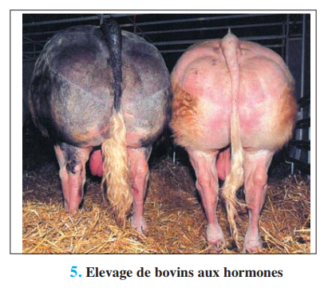
📷 Doc.5 — 5. Élevage de bovins aux hormones (p.94)
'">
Arguments POUR
Arguments CONTRE
Améliore la production de viande et de lait
Résidus hormonaux dans la viande et le lait
Réduit les dépenses d'alimentation des éleveurs
Risques de troubles neurologiques et de cancers
Rend ces aliments accessibles aux couches modestes
Troubles de la croissance chez les enfants pré-pubères
Ce sont des hormones naturelles rapidement dégradées
Absence de contrôle dans les pays où c'est autorisé
Les décès liés aux aliments sont très rares
Principe de précaution : dans le doute, protéger la santé publique
✏️ Mini-quiz 5B
1. L'utilisation des hormones en élevage est .
2. Le principal risque des hormones pour la santé est .
💡 À retenir : Le débat sur les hormones en élevage illustre la tension entre intérêts économiques (production accrue, prix bas) et protection de la santé publique. Le principe de précaution, adopté par l'UE, stipule que l'absence de preuve scientifique absolue de danger ne doit pas retarder les mesures de protection. La Tunisie, alignée sur les normes européennes, interdit l'importation de viandes aux hormones.
📋 BILAN — Pages 103-105 (5 blocs)
1 Contamination biologique (p.103)
Les toxi-infections sont causées par des . Les principales : . Les aliments les plus contaminés : .
2 Parasitoses (p.103)
Les parasitoses sont causées par . L'infestation se fait par .
3 Contamination chimique (p.103-104)
Les polluants chimiques incluent les . Ils s'accumulent par .
4 Antibiotiques et hormones (p.104)
Les antibiotiques en élevage favorisent . Les hormones de croissance sont . Leurs risques : .
5 Prévention (p.104-105)
Se protéger contre la contamination biologique : . Se protéger contre la contamination chimique : .
📝 Exercices — Manuel p.106
✏️ Ex.1 — QCM du manuel (p.106)
1. Les pesticides sont des molécules :
2. Salmonellose, Botulisme, Listériose :
3. Les salmonelles contaminent :
4. Antibiotiques en élevage :
5. Hormones en élevage :
🥫 Ex.2 — Conserves bombées (p.106)
On déconseille la consommation d'aliments dans des boîtes de conserve bombées ou des pots de yaourt gonflés, même si la date d'expiration n'est pas dépassée.
Le gonflement indique une production de gaz par . La toxi-infection suspectée est le .
🏥 Ex.3 — Salmonellose en maternité (p.106)
Une femme enceinte atteinte de salmonellose après avoir mangé de la viande de bœuf saignante met au monde un nouveau-né également atteint. La plupart des nouveau-nés de la maternité ont ensuite été infectés.
L'infection s'est propagée aux autres nouveau-nés par . La salmonellose est une .
📋 Bilan Révision — Vérifie chaque objectif
Exercice principal + bonus par objectif du programme.
1 Expliquer l'origine des toxi-infections alimentaires
Salmonellose = . Botulisme = . Listériose = .
2 Expliquer le mode d'infestation par les parasites